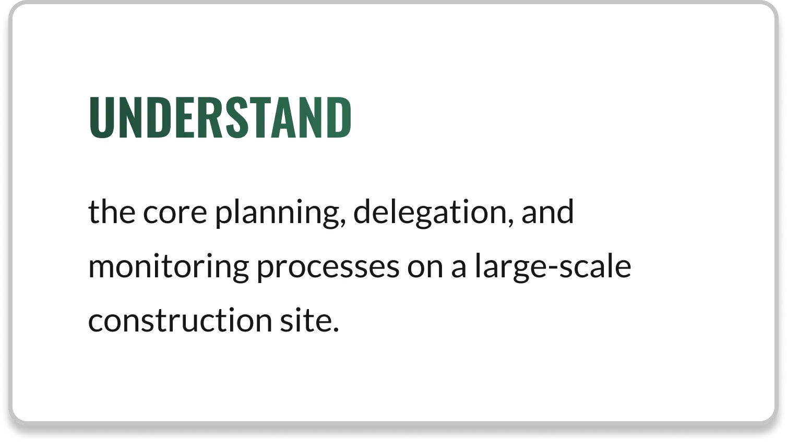
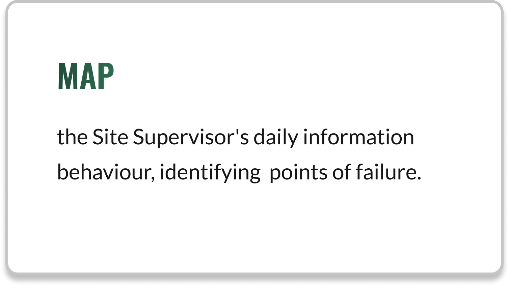
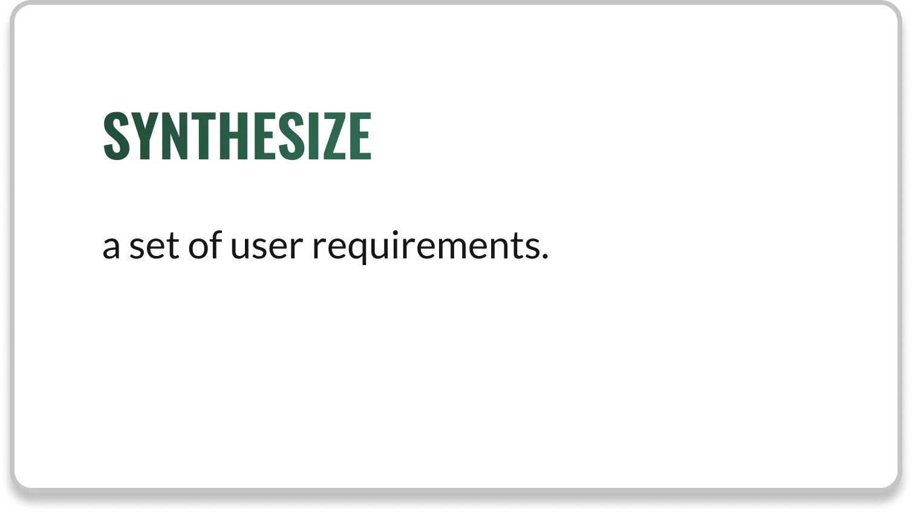

UXR
DESIGN GUIDELINES
PROJECT MANAGEMENT
CONSTRUCTION
UXR
DESIGN GUIDELINES
PROJECT MANAGEMENT
CONSTRUCTION
The core research question was, "How do we define the information and oversight gaps that restrict effective Supervisor-Client Communication?"
To deeply understand the operational reality, information management challenges, and critical pain points of the Site Supervisor, I conducted a 2-week interview-based ethnographic study of construction sites.
I aimed to deliver a synthesized design guidelines that showed the strategic value of creating a construction site-focused Project management tool.
I was handed this task on the first day of my co-op. Being an intern, I was not given access to Research Ops and I had to find the interviewees myself. I was operating in relatively cool conditions for Chennai -- around 30-33°C -- and I wore hi-vis clothing & broke into active construction sites. I spoke to site supervisors directly and conducted the interviews impromptu. I was able to complete 2 Ethnographic Interviews using a semi-structured questionnaire, focusing on daily priorities, current tools, and operational headaches.



The interviews revealed two critical pain points:
Focus: Task Fulfillment as per schedule.
Focus: Placate Clients by showing progress.
Both supervisors lack a centralized, standardized information flow. The research validates the need for a system that captures data to simplify workflow and generate transparent data for stakeholders.
The second phase focused on translating qualitative insights into a tangible Information Requirements Framework. The conceptual solution, i.e., the proposed Project Management Tool, was framed to demonstrate how centralized data could serve the dual purpose of Operational Oversight and Stakeholder Management.
The research dictates that the solution must enable the optimal decision-making workflow for supervisors by providing tiered access to information.
The system must provide a primary dashboard view that allows the supervisor to quickly filter project health based on high-level operational metrics; must also facilitate immediate transition from the macro status to the micro-level task list.
The top-level interface must immediately display quantifiable metrics (e.g., Site Readiness %) to indicate management priority.
The system must connect the quantifiable metric to a mandatory visual data stream to allow the supervisor to validate progress and confirm site reality before committing to a management action.